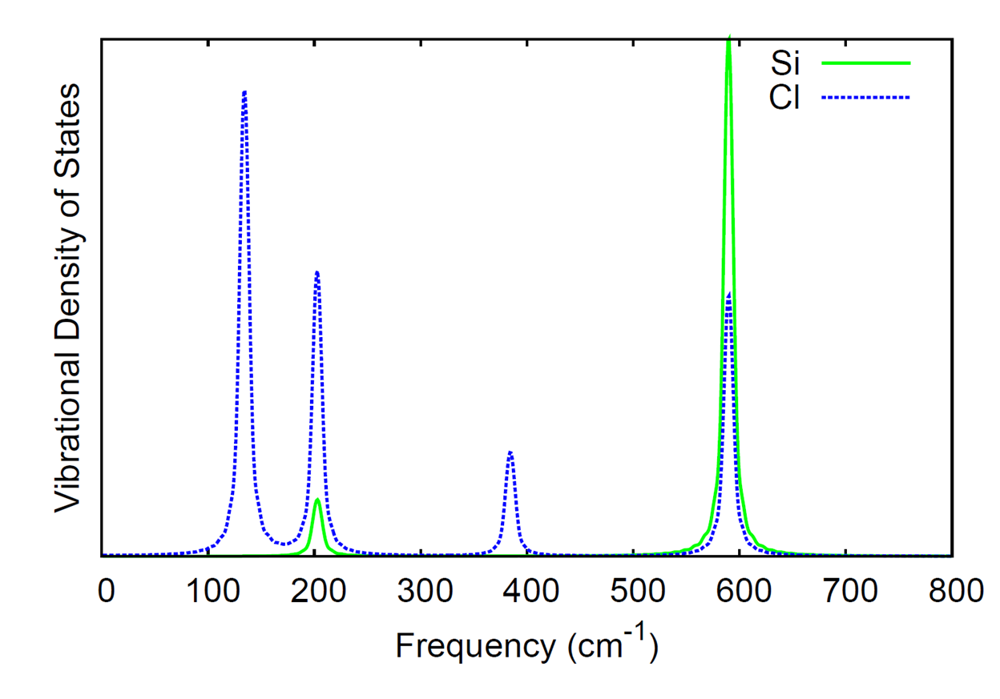
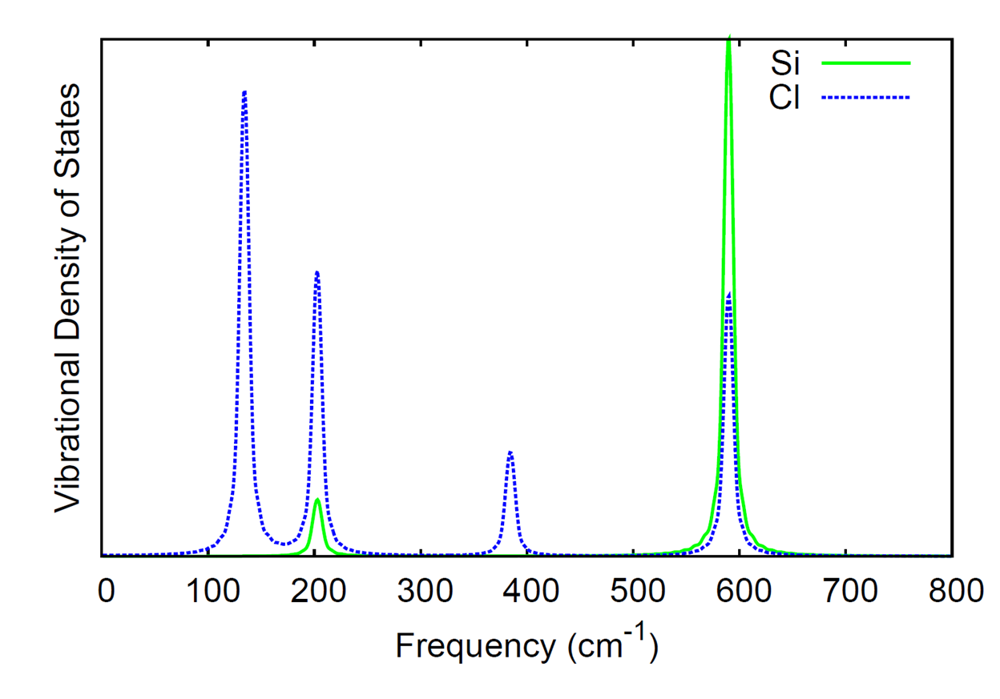

Gaussian Basis AIMD¶
Overview¶
This module performs adiabatic ab initio molecular dynamics on finite
systems. The nuclei are integrated using the velocity-Verlet algorithm,
and the electronic potential can be provided by any of the Gaussian
basis set based methods in NWChem, e.g. DFT, TDDFT, TCE, MP2, SCF,
MCSCF, etc. If analytic gradients are not available for the selected
level of theory, numerical gradients will automatically be used. Initial
velocities are randomly selected from the Maxwell-Boltzmann distribution
at the specified temperature, unless a restart file (.qmdrst) is
present. If a restart file is present, the trajectory information will
be read from that file and the trajectory will resume from that point.
For computational details and a case study using the module, please refer to the following paper: S. A. Fischer, T. W. Ueltschi, P. Z. El-Khoury, A. L. Mifflin, W. P. Hess, H.F. Wang, C. J. Cramer, N. Govind “Infrared and Raman Spectroscopy from Ab Initio Molecular Dynamics and Static Normal Mode Analysis: The CH Region of DMSO as a Case Study” J. Phys. Chem. B, 120 (8), pp 14291436 (2016); DOI:10.1021/acs.jpcb.5b03323.
QMD
[dt_nucl <double default 10.0>]
[nstep_nucl <integer default 1000>]
[targ_temp <double default 298.15>]
[thermostat <string default none> <thermostat parameters>]
[rand_seed <integer default new one generated for each run>]
[com_step <integer default 100>]
[print_xyz <integer default 1>]
[linear]
[property <integer default 1>]
[tddft <integer default 1>]
[namd ]
END
The module is called as:
task <level of theory> qmd
where
QMD Keywords¶
DT_NUCL: Nuclear time step¶
This specifies the nuclear time step in atomic units (1 a.u. = 0.02419 fs). Default: 10.0 a.u.
NSTEP_NUCL: Simulation steps¶
This specifies the number of steps to take in the nuclear dynamics.
Default: 1000
TARG_TEMP: Temperature of the system¶
This specifies the temperature to use with the thermostat. Also it is
used in generating initial velocities from the Maxwell-Boltzmann
distribution.
Default: 298.15 K
THERMOSTAT: Thermostat for controling temperature of the simulation¶
This specifies the thermostat to use for regulating the temperature of the nuclei. Possible options are:
- none
No thermostat is used, i.e. an NVE ensemble is simulated. Default
- svr
<double default 1000.0>
Stochastic velocity rescaling thermostat of Bussi, Donadio, and Parrinello,
J. Chem. Phys. 126, 014101 (2007)
Number sets the relaxation parameter of the thermostat
- langevin
<double default 0.1>
Langevin dynamics, implementation according to Bussi and Parrinello Phys. Rev. E 75, 056707 (2007)
Number sets the value of the friction
- berendsen
<double default 1000.0>
Berendsen thermostat, number sets the relaxation parameter of the thermostat
- rescale
Velocity rescaling, i.e. isokinetic ensemble
RAND_SEED: Seed for the random number generator¶
This specifies the seed for initializing the random number generator. If not given, a unique random seed will be generated. Even without a thermostat, this will influence the initial velocities.
COM_STEP: How often center-of-mass translations and rotations are removed¶
This specifies that center-of-mass translations and rotations will be
removed every com_step steps. Default 10 COM translations and rotations
are removed on startup (either randomized initial velocities or those
read from the restart file).
PRINT_XYZ: How often to print trajectory information to xyz file¶
This specifies how often the trajectory information (coordinates, velocities,
total energy, step number, dipole (if available)) is written to the xyz file. The
units for the coordinates and velocities in the xyz file are Angstrom
and Angstrom/fs, respectively.
For example, print_xyz 5 will write the xyz trajectory file every 5 steps.
Default: 1
LINEAR: Flag for linear molecules¶
If present, the code assumes the molecule is linear.
PROPERTY: How often to calculate molecular properties as part of the MD simulation¶
If present, the code will look for the property block and calculate the requested properties.
For example, property 5 will calculate properties on the current geometry every 5 steps.
Default: 0 (e.g properties are not computed)
TDDFT: How often to peform TDDFT calculation as part of the MD simulation¶
If present, the code will look for the tddft block and calculate the absorption spectrum.
For example, tddft 5 will perform tddft calculations on the current geometry every 5 steps.
Default: 0 (e.g tddft is not run)
Sample input files¶
Ground state Molecular Dynamics¶
The following is a sample input for a ground state MD simulation. The simulation is 200 steps long with a 10 a.u. time step, using the stochastic velocity rescaling thermostat with a relaxation parameter of 100 a.u. and a target temperature of 200 K. Center-of-mass rotations and translations will be removed every 10 steps and trajectory information will be output to the xyz file every 5 steps.
start qmd_dft_h2o_svr
echo
print low
geometry noautosym noautoz
O 0.00000000 -0.01681748 0.11334792
H 0.00000000 0.81325914 -0.34310308
H 0.00000000 -0.67863597 -0.56441201
end
basis
* library 6-31G*
end
dft
xc pbe0
end
qmd
nstep_nucl 200
dt_nucl 10.0
targ_temp 200.0
com_step 10
thermostat svr 100.0
print_xyz 5
end
task dft qmd
Excited state Molecular Dynamics¶
The following is a sample input for an excited state MD simulation on the first excited state. The simulation is 200 steps long with a 10 a.u. time step, run in the microcanonical ensemble. Center-of-mass rotations and translations will be removed every 10 steps and trajectory information will be output to the xyz file every 5 steps.
start qmd_tddft_h2o_svr
echo
print low
geometry noautosym noautoz
O 0.00000000 -0.01681748 0.11334792
H 0.00000000 0.81325914 -0.34310308
H 0.00000000 -0.67863597 -0.56441201
end
basis
* library 6-31G*
end
dft
xc pbe0
end
tddft
nroots 5
notriplet
target 1
civecs
grad
root 1
end
end
qmd
nstep_nucl 200
dt_nucl 10.0
com_step 10
thermostat none
print_xyz 5
end
task tddft qmd
Property calculation in a Molecular Dynamics simulation¶
Thefollowing is a sample input for an MD simulation that compute polarizability by means of the SOS method at each time step.
start qmd_prop_h2o_svr
echo
print low
geometry noautosym noautoz
O 0.00000000 -0.01681748 0.11334792
H 0.00000000 0.81325914 -0.34310308
H 0.00000000 -0.67863597 -0.56441201
end
basis
* library 6-31G*
end
dft
xc pbe0
end
qmd
nstep_nucl 200
dt_nucl 10.0
com_step 10
thermostat none
print_xyz 5
property 1
end
property
polfromsos
end
task tddft qmd
Additional sample inputs can be found in $NWCHEM_TOP/QA/tests/qmd_* (e.g. https://github.com/nwchemgit/nwchem/tree/master/QA/tests/qmd_dft_h2o_berendsen_props)
Processing the output of a QMD run¶
The xyz file produced by the QMD module contains the velocities (given in Angstrom/fs), in addition to the coordinates (given in Angstrom). The comment lines also contain the time step, total energy (atomic units), and dipole moment (atomic units). In the directory $NWCHEM_TOP/contrib/qmd_tools, the code qmd_analysis.f90 will used the xyz trajectory as input to calculate the IR spectrum and vibrational density of states from Fourier transforms of the dipole and atomic momenta autocorrelation functions, respectively. The code needs to be linked to a LAPACK library when compiled; the Makefile in the directory will compile the code with the LAPACK routines included with the NWChem source.
Here we compute the IR spectrum and the element-wise breakdown of the vibrational density of states for silicon tetrachloride (SiCl4). The following input file was used.
start SiCl4
echo
print low
geometry noautosym noautoz
Si -0.00007905 0.00044148 0.00000001
Cl 0.71289590 1.00767685 1.74385011
Cl -2.13658008 -0.00149375 -0.00000001
Cl 0.71086735 -2.01430142 -0.00000001
Cl 0.71289588 1.00767684 -1.74385011
end
basis
* library 6-31G
end
dft
xc hfexch 1.0
end
qmd
nstep_nucl 20000
dt_nucl 10.0
targ_temp 20.0
com_step 10
rand_seed 12345
thermostat none
end
task dft qmd
The IR spectrum and vibrational density of states were generated from the qmd_analysis code with the following command.
./qmd_analysis -xyz SiCl4.xyz -steps 15000 -skip 5000 -ts 10.0 -temp 20.0 -smax 800 -width 10.0
where we have skipped the first 5000 steps from the simulation and only used the data from the last 15000 steps to compute the spectra. The time step is given as 10 a.u. since that was the time step in the simulation and we output the trajectory information every step. The temperature was set to 20 K (for analysis, this is only used in the calculation of the quantum correction factor for the autocorrelation function of the dipole moment). The option smax sets the maximum of the spectral window that is output to 800 wave numbers. The width option sets the full-width at half-maximum of the peaks in the resulting spectra.
The computed IR spectrum and vibrational density of states are shown here.
 

NAMD: Non-adiabatic Excited Stated Molecular Dynamics¶
For details of the NAMD implementation, please
refer to the following paper:
H. Song, S. A. Fischer, Y. Zhang, C. J. Cramer, S. Mukamel, N. Govind and S. Tretiak,
“First Principles Nonadiabatic Excited-State Molecular Dynamics in NWChem”,
Journal of Chemical Theory and Computation 16 (10), pp. 6418-6427 (2020);
DOI:10.1021/acs.jctc.0c00295.
[namd]
[init_state <integer default 2>]
[nstates <integer default 2>]
[dt_elec <double default 0.01>]
[deco <logical default .false.]
[tdks <integer default 1>]
[end]
In the namd sub-block within the qmd block, please note:
- The number of roots requested in the tddft block must be at least nstates-1.
- The nuclear time step (dt_nucl) must be an integer multiple of the electronic time step (
mod(dt_nucl,dt_elec)=0).
DECO: Decoherence flag¶
The deco flag applies the EDC electronic decoherence correction described in the paper:
G. Granucci and M. Persico,
“Critical appraisal of the fewest switches algorithm for surface hopping”, J. Chem. Phys. 126, 134114 (2007);
DOI:10.1063/1.2715585.
The default value is .false., i.e. no decoherence correction is applied.
DT_ELEC: Electronic dynamics time step¶
The keyword dt_elec sets the electronic time step in atomic units.
N_STATES: Number of states¶
The keyword nstates sets the number of electronic states to include in the calculation, i.e.
the number of states for use with Eq. 5 of the 2020 Song paper.
INIT_STATE: Initial state¶
The keyword init_state sets the initial electronic state to be occupied;
the numbering for this keyword and the output that reports the currently
occupied state runs from 0 (ground state) to nstates-1.
So if you want to start a calculation in the first excited state, you would set
init_state to 1.
TDKS: Time-Dependent Kohn-Sham¶
The keyword tdks will use Time-Dependent Kohn-Sham instead of the default Tamm-Dancoff approximation.
The keyword requires the keyword odft
in the dft input block to work.
It can have two values:
1(default) selects the alpha spin channel2selects the beta spin channel
NAMD Input Example¶
Example input for fewest-switches surface-hopping (FSSH) approach.
geometry noautosym nocenter
O 0.0000 0.0000 0.1197
H 0.0000 0.7615 -0.4790
H 0.0000 -0.7615 -0.4790
end
basis
* library 6-31G*
end
dft
xc b3lyp
end
tddft
nroots 10
notriplet
cis
civecs
grad
root 1
end
end
qmd
nstep_nucl 50
dt_nucl 0.5
targ_temp 300.0
thermostat svr 500
namd
nstates 5
init_state 3
dt_elec 0.1
deco .true.
end
end
task tddft qmd